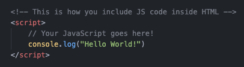

Variables and Operators
- "console.log()" is the command to print something to the developer console in your browser.
- 
- Another way to include JavaScript in a webpage is through an external script. This is very similar to linking external CSS docs to your website.
- <script>src="javascript.js"</script>